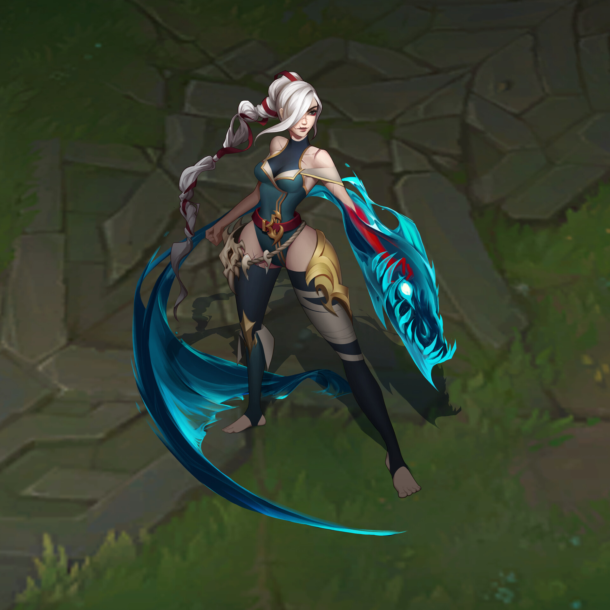

New Champion Ideas/Mechanics
Ideas and Mechanics for New Champions
Date: 10/3/21
Please read last Patch Notes
Attendance List:
- Andrew Huh
- Michael Dev
- Balance Man
Meeting Agenda:
- New Champion Ideas
- New Champion Mechanics
New Champion Ideas
Cossorro
From Last Meeting:
Cossoro is a champion that has been in the works for a few months now.
We've been looking for a champion that would a ranged assassin that can move through the jungle.
This Meeting:
We should look to finalize her kit and champion art.
New sounds!
New Champion Mechanics
From Last Meeting:
The More the Merrier
We've been looking at some new mechanics to implement for new champions, especially for our next release. We wanted to create a passive ability that allows a champion to gain power based on the number of units around it.
Specifics
For every unit that surrounds Cossorro, she gains 5 Adaptive Damage.
This Meeting:
Are these numbers viable? Would she be too powerful in lane early game? How does this impact the way players play around the lane/other teammates?